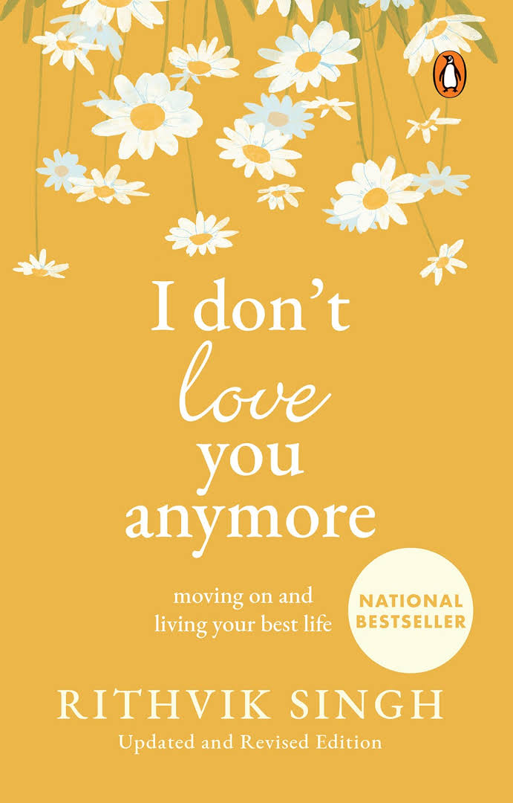

Poetry Books
Poetry books contain collections of poems, which are expressions of emotions, ideas, or stories through rhythmic and often metaphorical language. They offer readers a way to connect with different perspectives and experiences.
About Poetry
Poetry is a literary form that uses aesthetic and often rhythmic qualities of language to evoke meanings beyond the prose. It has a long history and has evolved over centuries, encompassing various styles, forms, and themes.
Famous Poetry Books
- "The Waste Land" by T.S. Eliot - A significant work in modernist literature.
- "Leaves of Grass" by Walt Whitman - A collection that celebrates democracy, nature, love, and friendship.
- "The Complete Poems of Emily Dickinson" by Emily Dickinson - Known for its unique style and exploration of themes like death and immortality.
- "The Collected Poems" by Sylvia Plath - Reflects her struggle with mental illness and her thoughts on life and death.
- "Milk and Honey" by Rupi Kaur - A contemporary collection dealing with themes of love, loss, and healing.
Featured Book

$12
Poetry